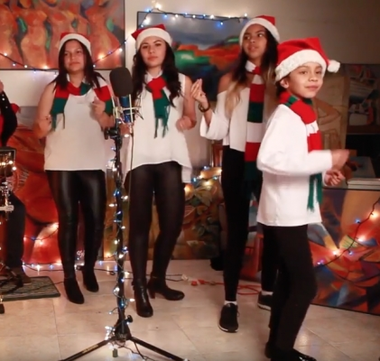

Individual

Grupo pequeño (2-4)
Grupo grande (5 o más)
El Ayuntamiento de Ezcaray organiza una actividad navideña dirigida a jóvenes del municipio con el objetivo de fomentar la participación y el espíritu festivo. Durante un recorrido por las calles del pueblo, se cantarán villancicos tradicionales y actuales, creando un ambiente navideño cercano y participativo para todos los vecinos.
Individual
Grupo pequeño (2-4)
Grupo grande (5 o más)